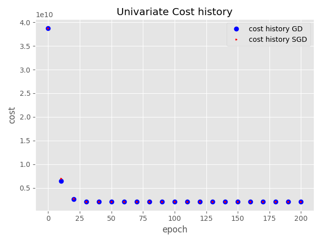
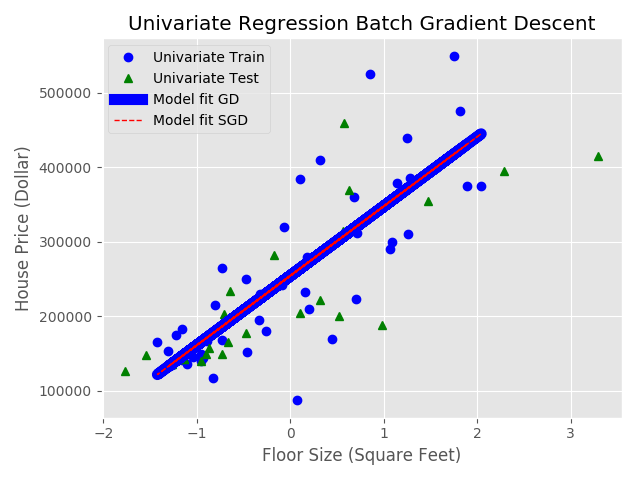

Univariate Linear Regression¶
In this question we fit batch gradient descent (BGD) method to find the house prices of given univariate data.
a) The plot of J(w) versus the number of epochs with step size 10 is shown below:
b) After training I printed the parameters (w) for train data and compared with normal equations. I found that both are exact (for 200 epochs of BGD):
Train Data
epochs learning_rate mean std w0 w1 rmse cost
200 0.1 2340.46 808.44 254,450.00 93,308.92 64,083.51 2,053,348,364.32
c) I plotted the training using the default blue circles and test using green triangles and also overplot the BGD fitted line.
- Comparison of BGD and SGD.
In stochastic grad desc, I shuffled the data while training. To get the reproducible results, I set the random seed to 100. The SGD training gives noisy results. The weight vector does not stabilize smoothly, it first decreases rapidly then fluctuates with some noise but after some iterations it will give similar results like BGD.
For this example after 175 epochs I got similar weight vectors from bgd and sgd:
np.random.seed(100)
w_norm_eqn = [[254,450.0000 93,308.9201 ]]
iters = 200 w_BGD = [[254,449.9998 93,308.9200 ]]
iters = 199 w_SGD = [[254,494.4429 93,244.2965 ]]
abs_diff_min = 109.06649000954349
np.argmin(abs_diff_min) = 175
- Extra credit
I also created a gif file that shows beautifully how the best fit line changes with the number of iterations. The cost function for test data settles down around 70 itrations. I created 70 png files and combined them to make a gif file.
The file is placed at Extra/cost_history.gif
The imagemagick command to create gif is:
convert -loop 0 -delay 100 test_images/test*.png cost_history.gif